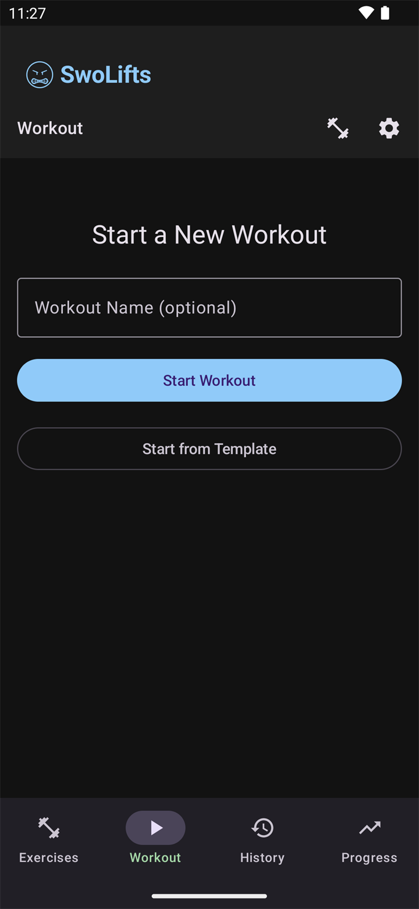
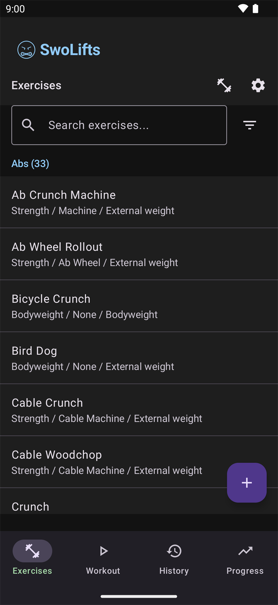
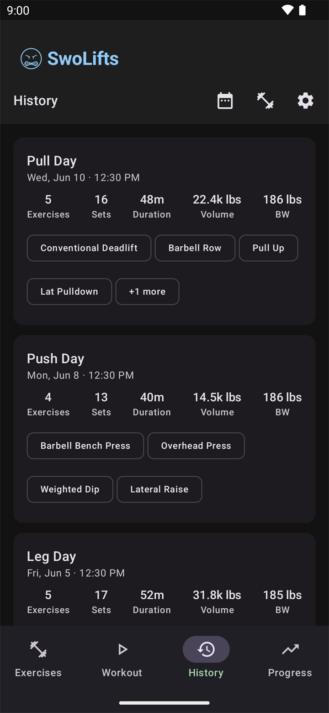
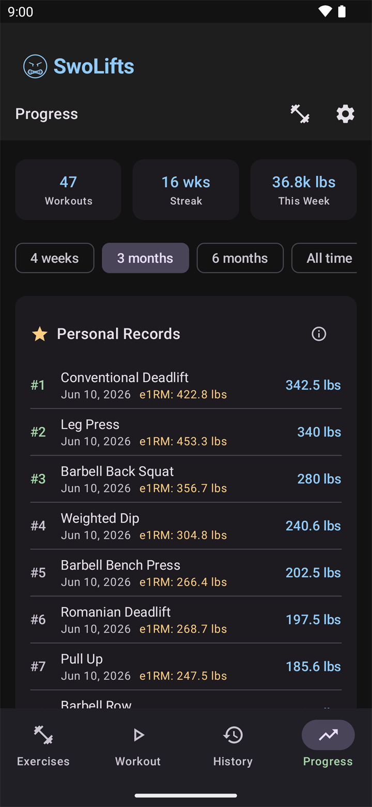
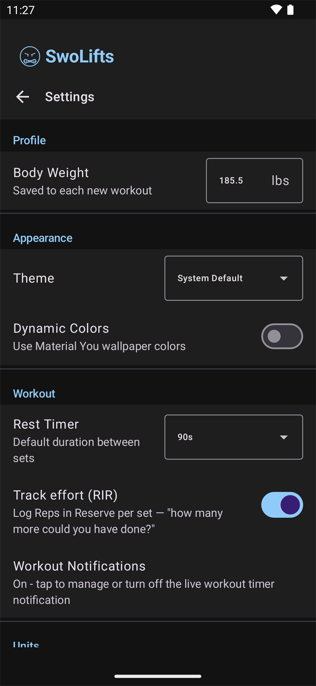

External Weight
The entered load is the exercise weight. Examples: bench press, squat, deadlift, dumbbell curl, machine row, and cable stack movements.
Follow the app by tab, with metric details where they matter.
Use the main SwoLifts tabs as your path through the app. Each section explains what to do first, then shows how SwoLifts tracks the data behind the screen.
The Workout tab is where you start from scratch, continue an active workout, or build from a saved template.

Set data auto-saves while you type. A set timestamp is captured when the set becomes complete, which lets SwoLifts build workout duration, history, and progress metrics without a separate save step.
The Exercises tab is the library behind your workouts. Search by name, muscle group, equipment, category, load type, or custom exercises.

SwoLifts uses load types to understand what the weight field means for each exercise.
The entered load is the exercise weight. Examples: bench press, squat, deadlift, dumbbell curl, machine row, and cable stack movements.
The load is your bodyweight. Examples: push-ups, bodyweight squats, and unweighted pull-ups.
The load is your bodyweight plus added weight. Examples: weighted dips, weighted pull-ups, and weighted chin-ups.
The load is your bodyweight minus assistance. Examples: assisted pull-ups, assisted chin-ups, and assisted dips.
The History tab shows completed workouts in list and calendar views. Open any session to review or correct it.

Completed workouts power the Progress tab. Edits to past sessions update charts, PRs, bodyweight trends, and volume totals automatically.
The Progress tab turns completed workout data into trends, personal records, and summary stats.

Settings are available from the gear icon. These choices affect how workouts are logged, displayed, and exported.

Exports include workout timestamps, exercise load types, assistance weight, and template assistance targets when those fields are present. Imports preserve those fields when restoring or merging a SwoLifts backup. For CSV templates and a desktop migration walkthrough, see the Import & Export Guide.